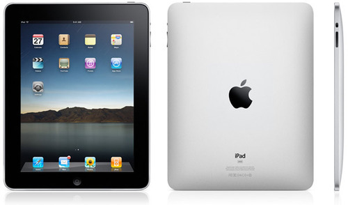

27 Ocak günü bizzat Steve Jobs’un tanıtımını yaptığı iPad ile ilgili yorum-eleştiri ve tahminleri pek çok internet sitesinden okumuş olmalısınız. iPad’in eksikleri, keşke şöyle olsaydı gibi tartışmalara girmeden saptadığım birkaç hususu burada paylaşmak istedim.
Öncelikle ülkemizdeki klasik PC kullanıcısının kapalı bilgisayar kavramını hiç bilmediğini, bilse bile anlamak istemediğini fark ettim.
iPad ile ilgili olarak vizyon sahibi olmayan ve kapalı bilgisayar kavramını bilmeyen kara ve kör-cahil yorumlarına gülüp geçiyorum. (iPad’i printer’a nasıl bağlanacağını soran bile var ;))
1987’den beri bilgisayar kullanan biri olarak  PC olarak adlandırılan bilgisayarlar ilk çıktığından bugüne ne değişti merak ederim. Klavye-Kasa-Monitör üçlemesinin yanına mouse eklendi, disket sürücüler yerini CD-DVD’lere bıraktı, işletim sistemleri geldi geçti, bunların dışında bilgisayar kullanma mantığı hep aynı oldu.
Kapalı bilgisayar denilen kavramla (kullanıcının dosya sistemine ulaşmasına gereksinimi olmadığı sistem), yeni nesil bilgisayar kullanıcıları iPhone ile tanıştı.  Artık dosyalar nerede,  o programı hangi klasöre yükledim gibi sorunlarla uğraşılmayan, uygulamayı internetten indirerek, otomatik olarak kurduğumuz, üzerinde işlem yaptığımız dosyanın veritabanı olarak yada cloud sistemi ile bellekte yada internet ortamında sakalandığı bir dönemdeyiz. Dosyalarımıza artık istediğimiz yerden erişebiliyor yanımızda taşımaya gerek kalmadan paylaşabiliyoruz.
Pek çok kullanıcı kapalı bilgisayar kavramını eleştiriyor, eskiden kalma bir alışkanlıkla dosya sistemine erişebilme endişesi yaşıyor. “Özgür bilgisayar istiyoruz(!)†diyerek son noktayı koyuyorlar.
Ben eski ve dinozor bir kullanıcı olarak tamamen kapalı bilgisayar kavramını savunuyorum. Program nereye yüklenmiş, hangi dosya üzerine yazmış beni hiç mi hiç ilgilendirmiyor. Programı açmak, yapacaklarımı yapmak ve çıkmak istiyorum. Özgür bilgisayar(!) dediğimiz şey aslında bilgisayarın çökmesi, mavi ekranlar, okuma/yazma hataları, driver uyumsuzlukları, virus tehlikesine karşı anti-virus uygulamalarını ve kayıp dosyaları barındırıyor. En özgür işletim sistemi Linux, bedava olmasına karşın 10 yıldır bir adım ilerleyemezken, iPhone OS 3 yılda milyonlarca kullanıcıya ulaştı.
iPhone için satın aldığım uygulamalar, bizzat işletim sistemini üreten Apple tarafından AppStore bünyesinde, programın çalışacağı donanım üzerinde test ediliyor. Son kullanıcıya sorunlarından %99 arınmış olarak geliyor.
Kısacası kapalı bilgisayar kavramının kullanıcının lehinde ve çok olumlu olduğunu düşünüyorum. iPad ile kapalı bilgisayar kavramının sadece smartphone’larda değil bilgisayarlarımızda da karşımıza çıkacağı anlaşılıyor.
-
Apple bilgisayar dünyasının geleceğini mobil teknolojilerin belirleyeceğinin farkında, bu sektörde liderlik koltuğuna oturmuş olmalarına şaşırarak sevinmiş durumdalar.
-
Apple’ın amacının bilgisayar ve mobil donanım satmanın yanında hiç beklemeden büyük bir başarı yakaladığı içerik satışı doğrultusunda olduğu görülüyor. iTunes ile müzik ve DVD filmlerin satışını, AppStore’da uygulama satışını büyük başarı ile gerçekleştirdiler. Şimdi de iBooks ile e-book satışına girecekler. iPad işte bu kapıyı açacak bir anahtar gibi görülüyor.
Apple’ı bu kadar övdükten sonra asıl önemli soruya gelelim: Ben iPad almayı düşünüyor muyum? Hayır, Türkiye’ye ne zaman gelir bilmiyorum ama iPad almayı düşünmüyorum. Kolay taşınabilir birşey değil. Klavyesini kullanmak biraz zor gibi. iPad ile yapılacak çoğu şeyi zaten iPhone ile yapabiliyorum.
iPad başarılı olur yada olmaz. Apple’ın sadık bir alıcı kitlesi olduğu düşünüldüğünde iyi satış rakamlarına ulaşabilir. Ama soruna sadece satış rakamları açısından bakmak büyük bir hata olur. Bilgisayar ve iletişim dünyasının geleceğini belirleyecek vizyonu görebilmek ve iPad’i bu açıdan değerlendirmek gerekiyor. Yoksa “Bunun neden kamerası yok?†yada “Flash desteği iPad’de yok!†gibi manasız şeyler sormaya ve söylemeye devam ederiz.